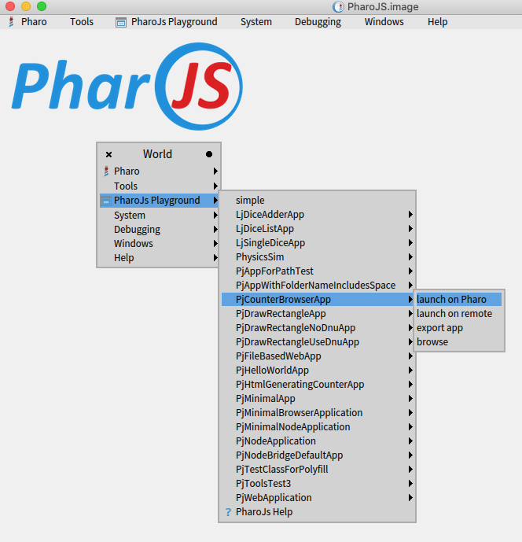
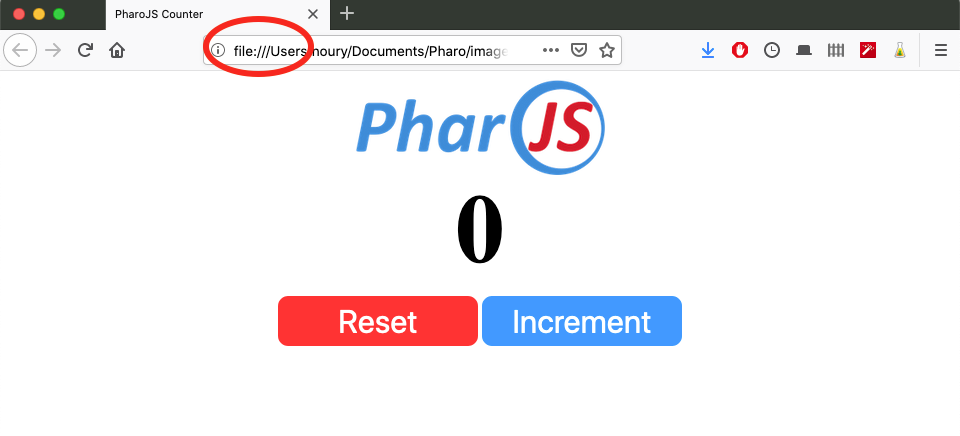
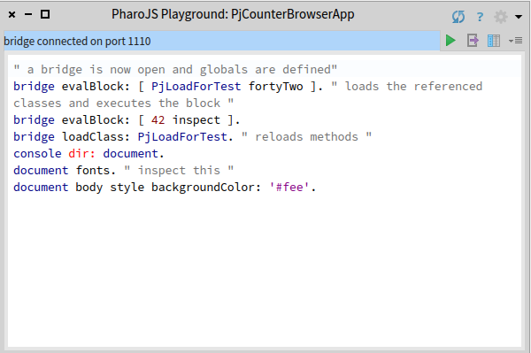

PharoJS extends the World menu with an entry. It lists all PharoJS apps. For this example, we use the counter app. We choose the first option to lauch it. It means that the counter code runs in Pharo. It talks over a web socket to DOM objects.Alternatively, you can the second option, where the app's Pharo code is converted to JS and run on the remote Javascript interpreter (typically a web browser).
Note that the file is local to your disk. It is downloaded from GitHub, along with PharoJS code.
Here you can interact with the app. You can send messages to app objects, including DOM objects.
